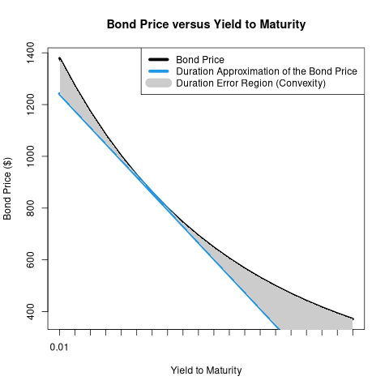
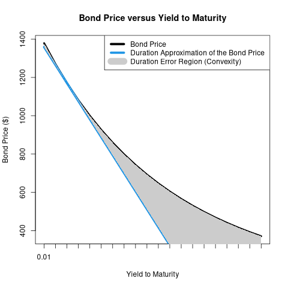
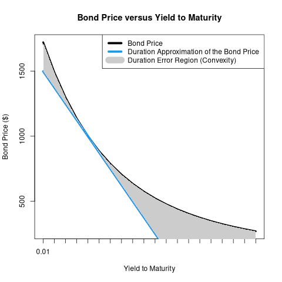

Convexity
Table of Contents
1. Bond Convexity
Bond convexity refers to the actual convex (non-linear) relationship between a bond's price and yield. This is stated in relation to the linear duration approximation of the bond price and yield relationship.
- Convexity is often used as a general term for the approximation error that exists when using duration to approximate interest rate risk.
- The idea is this: duration is a linear (first derivative) approximation. To make the approximation more accurate, we can include a second-derivative adjustment, which is known as the convexity adjustment.
- The convexity adjustment is more important as the change in yield increases.
- This is most easily understood graphically.
2. Visualizations
The following series of visualizations allows you to see, for varying yields, a bond's actual price, the price predicted by duration, and the effect of convexity.
- Observe that duration always predicts that the bond's price will be lower than it will actually be. Bond owners love convexity!
You can also see the effect of the coupon, YTM, and maturity on the bond's duration and convexity.
- A steeper slope means a higher duration (more interest rate risk).
- When changing the coupon rate and maturity, note the changing values on the vertical axis to see the slope steepening and flattening.
##Bond Price, Duration, and Convexity plot_convexity <- function(input_ytm = 0.07, input_coupon = 0.05, input_years = 10){ ytm <- input_ytm coupon <- input_coupon years <- input_years bondValue <- 0 ytmAxis <- seq(0.01, .2, by = .01) period <- 1 cash_flows <- 0 for (i in 1:years){ cash_flows[i] <- (coupon * 1000) } cash_flows[length(cash_flows)] <- cash_flows[length(cash_flows)] + 1000 pvCashFlows <- cash_flows / (1 + ytm)^(1:years) ## Bond Calculation: includes semiannual case which is not used ---- if (period == 1) { for (i in seq_along(ytmAxis)){ bondValue[i] <- (coupon * 1000) * ((1 - 1 / (1 + ytmAxis[i])^(years)) / ytmAxis[i]) + 1000 / (1 + ytmAxis[i])^(years) } } else { for (i in seq_along(ytmAxis)){ bondValue[i] <- (coupon * (1000 / 2)) * ((1 - 1 / (1 + (ytmAxis[i] / 2))^(years * 2)) / (ytmAxis[i] / 2)) + 1000 / (1 + (ytmAxis[i] / 2))^(years * 2) } } # find on x-axis where ytm equals the input ytm ----- index <- seq_along(seq(0.01, .2, by = .01))[round(ytm,2) == round(ytmAxis, 2)] # Calculate Duration and Modified Duration ---- Duration <- 1:years %*% (pvCashFlows / bondValue[index]) modDur <- -1 * Duration / (1 + ytm) durLine <- bondValue[index] * (1 + (modDur * (ytmAxis - ytm))) yAxis <- c("0.01", "", "", "", "0.05", "", "", "", "", "0.10", "", "", "", "", "0.15", "", "", "", "", "0.20") png(paste0("./img/convexity_", ytm, "_", coupon, "_", years, ".png")) plot(1:20, bondValue, xaxt = "n", main = "Bond Price versus Yield to Maturity", ylab = "Bond Price ($)", xlab = "Yield to Maturity", type = "n", lwd = 4) axis(1, at = 1:20, labels = yAxis) lines(1:20, bondValue, lwd = 4) lines(1:20, durLine, lwd = 5, col = 4) legend('topright', c("Bond Price", "Duration Approximation of the Bond Price ", "Duration Error Region (Convexity)"), lty = c(1,1,1,1), col=c(1,4, "grey80"), lwd = c(5,5, 15)) ## attempting to shade region between the two lines [not working] ---- polygon(c(1:20, rev(1:20)), c(bondValue, rev(durLine)), col = "grey80", border = NA) dev.off() }
plot_convexity(0.07, 0.05, 10)

plot_convexity(0.03, 0.05, 10)

plot_convexity(0.05, 0.05, 20)

3. Calculating Convexity
To approximate the change in the bond's price given a particular change in yield, we add the convexity adjustment to our original duration calculation. Convexity (C) is defined as:
- \(C = \frac{1}{P}\frac{\partial^2 P}{\partial y^2}\)
- where \(P\) is the bond's price, and \(y\) its yield-to-maturity.
Taking the second derivative of the bond's price with respect to yield affords:
- \(\frac{\partial^2 P}{\partial y^2} = \sum_{t=1}^{T} t(t+1)\frac{C_t}{(1+y)^{t+2}}\)
- where \(t\) is each period (coupon payment), numbered from \(1\) to \(T\), and \(C_t\) is the payment amount in that period.
4. Duration with Convexity Adjustment
And so the approximation of the change in the bond's price for a given change in yield (\(\Delta y\)), including both duration and convexity, is:
- \(\Delta P \approx -D^*P\Delta y + \frac{1}{2}CP(\Delta y)^2\)
- where \(D^*\) is the bond's Modified Duration.
On the next slide is an interactive duration and convexity calculator.
import numpy as np class bond: def __init__(self, coupon, years, ytm): self.coupon = coupon self.years = years self.ytm = ytm def payments(self): self.coupon_payment = (self.coupon * 1000) / 2 self.periods = np.linspace(1, self.years * 2, self.years * 2) self.payments = np.repeat(self.coupon_payment, len(self.periods)) self.payments[len(self.periods) - 1] = self.payments[len(self.periods) - 1] + 1000 return self.payments def value(self): # self.payments() self.value = np.inner(self.payments, (self.payments * 1 / (1 + (self.ytm / 2))**self.periods)) return self.value def duration(self): # self.payments() # self.value() numerator_duration = np.inner(self.periods, (self.payments * (1 / (1 + (self.ytm / 2))**self.periods))) duration_in_periods = numerator_duration / self.value self.macaulay_duration = duration_in_periods / 2 self.modified_duration_in_years = self.macaulay_duration / (1 + self.ytm / 2) return self.modified_duration_in_years def convexity(self): # self.payments() # self.value() # self.duration() second_derivative = np.inner((self.periods * (self.periods + 1)), ((self.payments * (1 / (1 + self.ytm / 2)**(self.periods + 2))))) self.convexity = second_derivative / self.value ## annualize semiannual convexity self.convexity = self.convexity / (2**2) return self.convexity
None